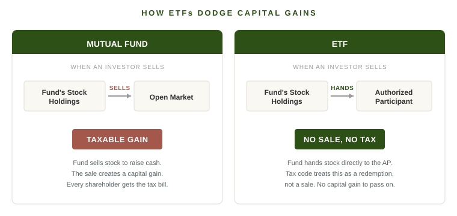

When Apple releases a new iPhone, you can hold it in your hand. You can see the screen got bigger, feel that the camera bump moved, watch the battery last an extra hour. The product evolved, and the evolution is visible.
The financial industry releases new products too. It just doesn't put them in a glass box at a launch event. Someone at a fund company decides that the way investors buy a basket of stocks could be done a little better, a little cheaper, a little more tax-efficient. They build a new structure. The structure ships. It changes how billions of dollars move. And almost no one outside the industry can tell you what changed or why.
This post is about three of those wrappers. Mutual funds, ETFs, and a couple of stranger cousins. The reason it's worth caring about is not exciting. The reason is that the wrapper around your investments quietly determines how much of your return ends up with you and how much leaks out to the IRS or the fund company along the way.
Mutual Funds Were a Real Invention
Before mutual funds were widely available to ordinary investors, owning a diversified stock portfolio was basically a rich-person activity. If you wanted exposure to thirty large American companies, you had to buy thirty stocks, pay thirty commissions, track thirty positions, and rebalance them yourself. Most people didn't bother.
The mutual fund solved that. You sent your money to a fund company, the fund company pooled it with everyone else's, and a professional manager bought the basket on your behalf. You got diversification in one ticket. You got somebody whose full-time job was watching the portfolio. And you got it for a price that, by the standards of the time, was reasonable.
This was a legitimate financial-industry product launch. The 1970s and 1980s were the iPhone moment for mutual funds. Vanguard's first index fund opened in 1976. Fidelity Magellan turned Peter Lynch into a household name. Assets in the industry grew from under $50 billion in 1970 to over $1 trillion by 1990. Ordinary households started owning the stock market in a way they never had before.
So when I say ETFs are a better mousetrap, I'm not knocking mutual funds. They're one of the more useful inventions of the last fifty years of finance.
The Problem Mutual Funds Couldn't Quite Solve
The trouble starts with how the wrapper handles taxes. When a mutual fund manager sells a stock at a profit, the fund realizes a capital gain. By law, the fund has to pass that gain through to its shareholders at year-end, and they pay tax on it. That's true even for shareholders who never sold a share themselves.
It gets more uncomfortable. Imagine you bought a mutual fund last week. The fund has been owned for decades by a hundred thousand other people. Inside the fund are stocks the manager bought a long time ago, with enormous unrealized gains. If the manager sells some of those stocks this December, perhaps to cover redemptions from other shareholders who are leaving, you pay tax on those gains. Even though the fund hasn't gone up a dollar since you bought it. You inherited someone else's tax bill.
This is called the embedded gains problem, and it gets worse the older and more popular a fund becomes. It's one of the reasons buying a successful mutual fund late in its life can be a quiet drag on after-tax returns.
The other quiet drag is fees. Active mutual funds have historically charged around 1% per year, sometimes more. That sounds small until you compound it across forty years of investing, where it can eat a meaningful chunk of terminal wealth. The fund company is taking a slice. You don't see it because it's never billed to you. It just comes off the top of your returns each year.
How ETFs Pulled Off the Tax Trick
By the early 1990s the industry had a product problem. Mutual funds were everywhere. The biggest categories were saturated. Differentiation was getting harder. So the industry did what industries do when their existing product line matures. It launched a new wrapper.
The first US ETF, SPY, opened in 1993. On the surface ETFs look almost identical to index mutual funds. You buy them through a brokerage account. They hold a basket of stocks that tracks an index. You pay a small annual fee. The differences are in plumbing the average investor will never see, and the most important difference is how the fund handles buying and selling shares.
When you buy a mutual fund, the fund company creates new shares for you and uses your cash to go buy more of the underlying stocks. When you sell, the fund company has to come up with cash to pay you, which usually means selling some of the underlying stocks. Those sales create taxable gains, which everyone in the fund pays for.
ETFs do not work that way. The fund relies on a class of institutional middlemen called authorized participants. APs are large banks and market makers who have a contract that lets them deal with the fund directly, and they are the only ones who can. Everyone else, including you and me, can only trade ETF shares on the open market.
Here is what happens when investors sell. The AP buys those ETF shares on the open market and hands them back to the fund. Instead of paying cash, the fund hands the AP a slice of its underlying basket, the actual shares of Apple, Microsoft, and the rest. The AP then sells those stocks for cash and pockets a small spread. The fund never sold anything. It just handed appreciated stock out the door.
That handoff is the tax trick. There is a provision in the tax code, originally written for mutual funds in a sleepier era, saying that when a fund distributes property to a shareholder in redemption of that shareholder's stock, the fund does not recognize a capital gain on the property it hands over. ETF designers built an entire structure around it. Twenty-year-old Apple shares with a tiny cost basis can leave the wrapper, and as far as the IRS is concerned, no sale happened. There is no gain to distribute to shareholders at year end. You as the investor pay tax on what you sell, when you sell it. Nothing else.

The result, in practice, is that a typical broad-market index ETF distributes essentially zero capital gains in a typical year. Compare that to actively managed mutual funds, which can distribute 5% or more of their value as taxable gains in years when they're managing redemptions or repositioning.
Add the fee difference and the math compounds. The cheapest S&P 500 ETFs charge 0.03% per year. Many actively managed mutual funds still charge over 1%. On a million-dollar portfolio held for thirty years, that gap alone is the difference between a comfortable retirement and a more comfortable retirement.
The Cousins Worth Knowing About
A couple of other wrappers come up enough that they're worth a quick word.
Closed-end funds are mutual funds' older sibling that never really caught on. They issue a fixed number of shares that trade on an exchange like a stock. The structure has one persistent quirk. The shares almost always trade at either a premium or a discount to the actual value of the assets inside the fund, sometimes by 10% or 15%. That gap doesn't reliably go away. It can persist for years. It can also widen at exactly the moment you wanted to sell.
For most investors, closed-end funds are an answer to a question nobody asked. There are exceptions, mostly for advanced investors hunting for specific discounts in niche credit markets. For everyone else, they're a wrapper to walk past.
MLPs, or master limited partnerships, are a different animal. They're a structure used mostly by midstream energy companies, the ones that own pipelines and storage tanks. They've historically delivered good returns and high yields, partly because the structure passes income through to investors before any corporate tax is paid. The trade is complexity at tax time. Instead of a simple 1099, MLP investors get a K-1, which can be confusing and which sometimes doesn't arrive until April. Holding MLPs in a retirement account is a particularly bad idea, because the unrelated business taxable income they generate can trigger tax consequences inside an account that's supposed to be tax-deferred.
The takeaway on closed-end funds and MLPs is the same as the comparison between mutual funds and ETFs. The wrapper is doing something. It's worth knowing what.
Boring Reasons Are Often the Right Reasons
When investors compare investments they tend to focus on what the investment owns. Is the fund holding the right stocks. Is the manager smart. Is the strategy working. Those questions matter, but they all assume the wrapper is neutral, and the wrapper is rarely neutral.
In most cases, the right wrapper for the average investor is the cheapest, most tax-efficient, simplest one available. For broad market exposure, that means an ETF. The differences look small year to year, often a fraction of a percent. They look very large after thirty years of compounding.
The financial industry will keep launching new wrappers. Some of them will be genuinely useful, the way the original mutual fund was, the way the ETF was. Most of them will be products designed to capture a fee or solve a problem the average investor doesn't actually have. The way to tell the two apart is to ask the boring questions. What does it cost. How does it handle taxes. What is the structure doing for me that a simpler structure isn't already doing for free.
If the answer to the last question is nothing, you've found a wrapper to walk past. Boring is usually the right answer.